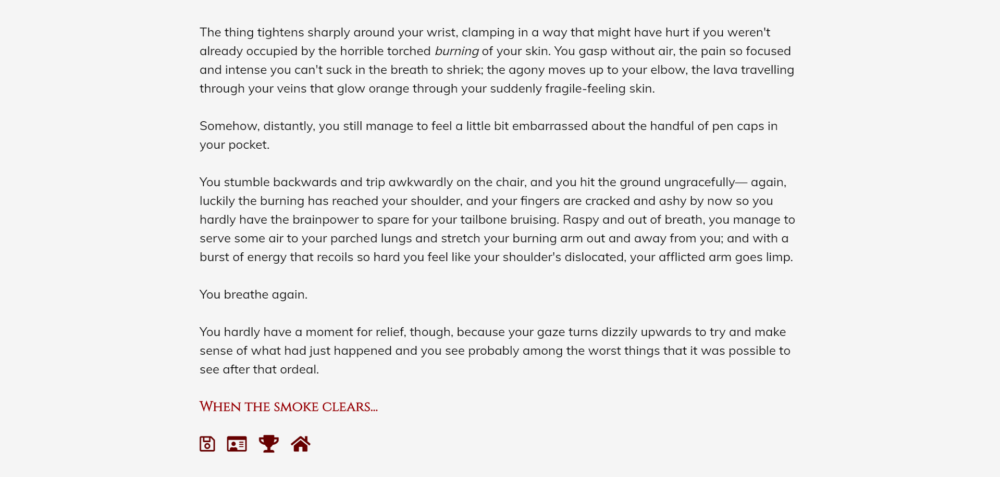
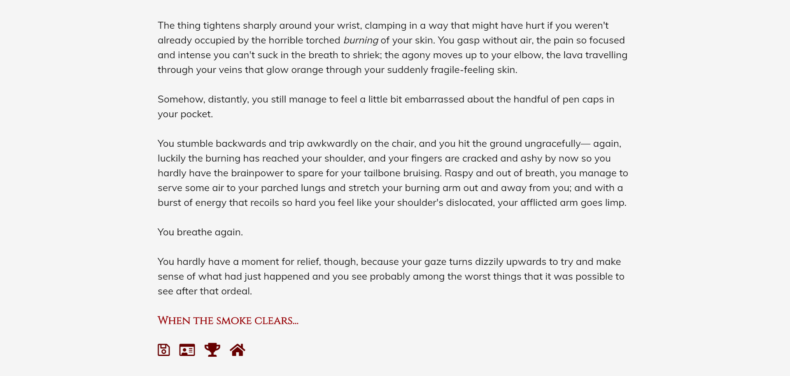
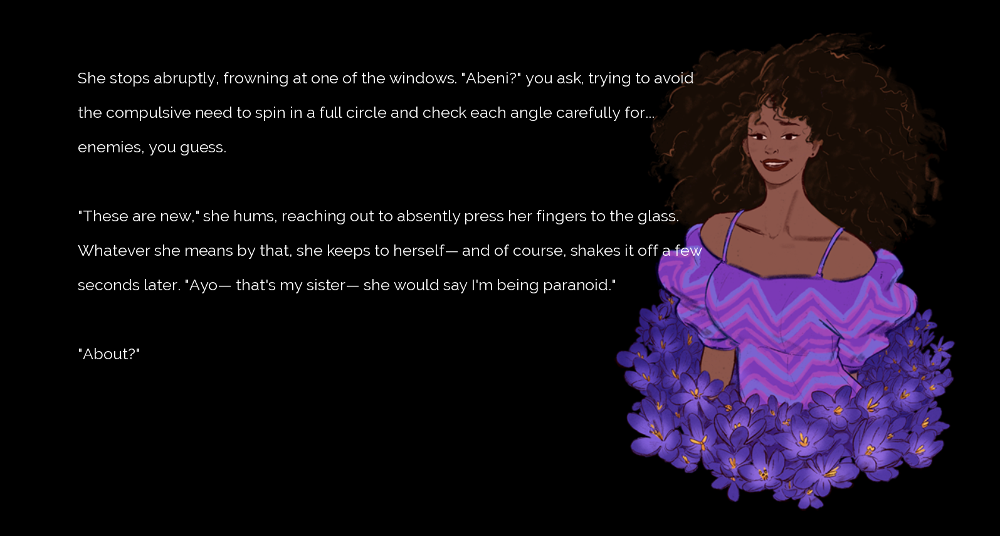
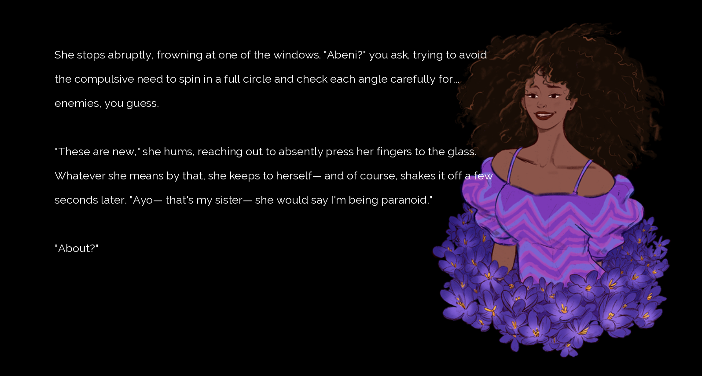
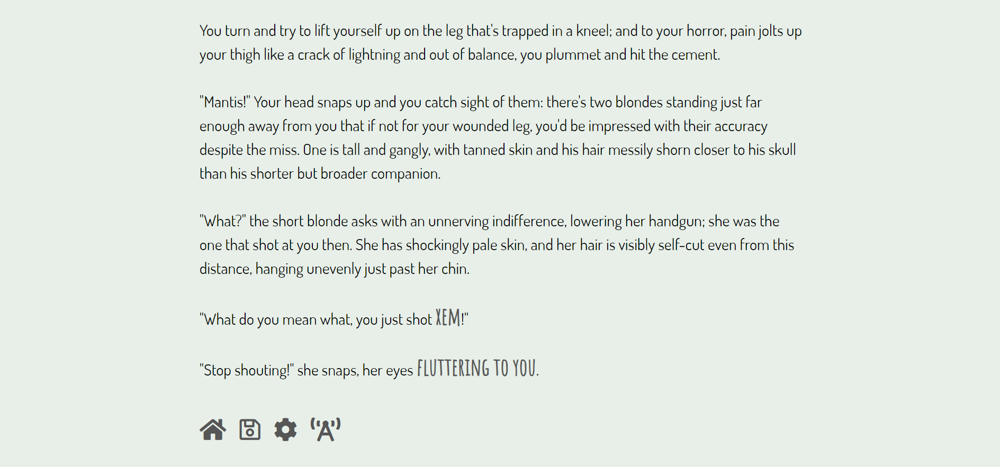
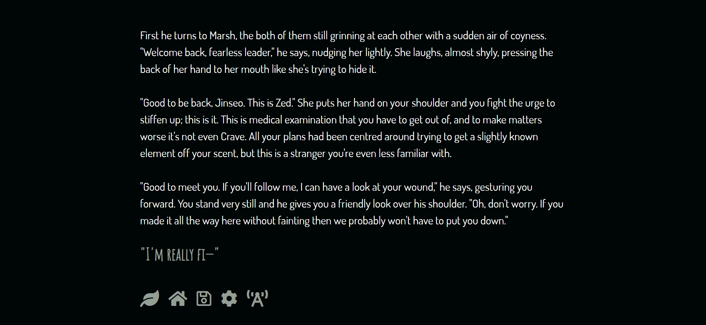
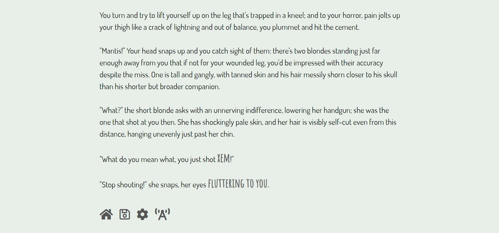
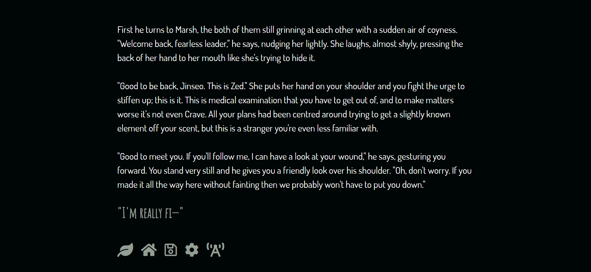

Marti Toonen (b. 1995) has a BA Honours in Professional Writing from York University, and a degree in Enterprise Web & Mobile Development from triOS College.
I'm an indie game developer who is passionate about interactive storytelling, and the challenge of telling a story in collaboration with a player. Being the only developer on several independent projects has honed my skills in narrative design, coding, research, time management, and resource management.
My hobbies include cooking, loving dogs, and changing the font on my website like I'm trying to set a record.
Game Development
Cinamon
While writing for Cinamon, I worked on adapting short novels into multi-chapter interactive fiction and expanding upon plot events and characters in order to give players significant and insignificant choices (both paid and free). In the process of adapting these novels I developed a story and character outline, designed and requested sprite and background art, did research on plot intricacies (how certain professions work, how some vehicle damage would look, etc), developed tone and voice for characters, and used a spreadsheet program to develop scripts.
As well as adapting novels, I also pitched and developed my own stories, putting together art references for original characters and expanded the standard formatting out into more episodes with shorter arcs. I used a list of tropes and genres that the company was missing in their line up and created multi-chapter stories, which I then also worked on as an author.
I consistently stayed ahead of schedule while working under similar time constraints due to difference in timezones. I integrated formal changes and self-edited in under a day, and stayed in consistent communication while frequently asking questions to clarify my tasks and ensure that no work would need to be redone. I also designed, wrote, and implemented premium choices to entice players into microtransactions.
Voltage Inc.
While working with Voltage I would take a plot document and story bible, and use them to create scripts on a two week turnaround. I took edits from production and implemented them, frequently in a day or less. I also developed style and tone for characters across routes, self-edited scripts before submission, performed contextual research for scenes involving specialized knowledge (such as botany, sports, and cooking), and established rapport and dialogue tone between characters.
I've also honed my skills in entirely remote work in disparate time zones, finishing scripts on their schedule rather than my own and implementing fixes and changes to suit their schedule. I frequently handed in work early in order to accomodate the schedules of other departments. While with Voltage I shipped two games, wrote and formatted an unreleased prototype in full, and built premium options for the purpose of enticing players to engage with microtransactions.
Bad Ritual
Bad Ritual is a text adventure game built with Twine Harlowe (including CSS, HTML, and Javascript).
Play as a street agent whose job is to wrangle the Infernal— various species of supernatural creatures that prowl the streets of Sanctum City— for the prestigious SignetWorks corporation. You have no love for your job, as a minimum wage hazard worker: still, your immediate supervisor, Tahira, is supportive and money is money, until one night when you're called back into the office to babysit an ancient demonic artifact.
Things go terribly wrong and you end the night bound to an ancient archdemon called Siruud the Devourer. Now you're faced with a choice: Siruud wants you to help him find out why he was brought to SignetWorks, while Tahira wants your help to contain a potentially violent threat to Sanctum City.
In a city where everyone has a secret, you have to decide how you want to unbind yourself from Siruud, but watch out: SignetWorks is always watching.
 



Manor Hill
Manor Hill is a partial visual novel built with Ren'py (including Python).
You're a community staple of your native Uresa, and every year you attend the Harvest Festival held in the manor on the hill. Every other year you've gotten a little tipsy and headed home, but this year is a little different. The party is packed with the elite from all over the continent, but while you get swept up in the party, something insidious is happening behind the scenes.
After a violent disruption to the festival, you wake up alongside one of the partygoers: Abeni, the Commander of the Fleet; Valerian, a mob boss from a neighbouring country; or Gnarl, your best friend and local con artist. You quickly realise that not only have the party guests disappeared and left you totally alone, but there's no way out. You're trapped in the manor on the hill, and either no one on the outside knows or cares.
Get to the bottom of why you were locked away, and find a way out. Can you trust your partner? And if you can't, what hope do you have?

 



Hybrid
Hybrid is a text adventure game built with Twine Harlowe (including CSS, HTML, and Javascript).
Civilization has crumbled, but not in the way that anyone expected. The earth rose up, and in an impossible act of rapid evolution, destroyed the monuments of human society. This, however, doesn't affect you at all: your name is Zed, and you've lived in this fractured world your whole life. You and your last remaining family member have a farm, a home, and even a radio tower. You've never seen another person, but you hardly need to.
When your farm is ravaged by strange-looking scavengers, with your family nowhere to be found, you'll be forced to set out into the wild to find them. On the way, you'll stumble upon an outpost with even stranger strangers, and be confronted by a question that you've never had to consider before.
How far are you willing to go to preserve humanity?
 




Platforming Pro Madness
Platforming Pro Madness is a collaborative platformer created in Unity using C# with a two month deadline.
My primary role in the development of the game was UI design and integration, bug fixing, and research. I personally designed and developed the main menu and all functionality (including the ability to save in certain areas, the ability to continue said game, and the ability to start a new game), new game functionality (including character selection, gear and weapon equipping, and an in-game message/notification system), and minor in-game mechanics (such as a pause menu, equipment menu where the player could switch characters and equipment, and dialogue system).
In addition to writing all dialogue, I also performed bug fixing on movement systems and level-switching, and performed quality assurance tests on multiple levels. I also performed routine tasks such as sound integration, edited levels to remove unnecessary editor clutter, and made balancing tweaks on behalf of level design. With regards to research, I gathered royalty free sprites, backgrounds, fonts, and sounds. I also looked into free tutorials for programming, Unity editor work, and Photoshop for creating and modifying art.


Murder in Boot Gulch
Murder in Boot Gulch is a demo RPG created in Unity using C# in two weeks.
It's primary function was to demo new and updated scripts and systems for dialogue, journal updates, floating text, and camera movement. Additional experiments were run for animations and sound integration.
In addition to writing all dialogue, I also performed bug fixing on movement systems and camera movement and boundaries. As usual I also built all organizational structures and universall functional scripts.
VR Escape
This VR escape room game was collaboratively made in Unity using C#.
I had a variety of responsibilities on the team, the most vital of which was making reusable scripts for multiple functions such as drawer opening, button pressing, and investigation of objects. I was primarily concerned with minimizing clutter, both in the editor and inside the file structure. I also wrote the clues and designed and integrated the menu systems, sound, and designed some aspects of the environment using both free and originally designed (by the team artist) 3D assets.
Besides all of that, I also performed bug fixes, organized the cloud structure, and kept the team on schedule and within scope.
Web Development
Kepler Shipyards
Made in thirty-five hours, this website was created to finish up an internship obligation. Using resources provided by the company, I reformatted and designed their entire website using HTML and CSS. I made use of free to use assets and images in order to provide placeholders for future development.